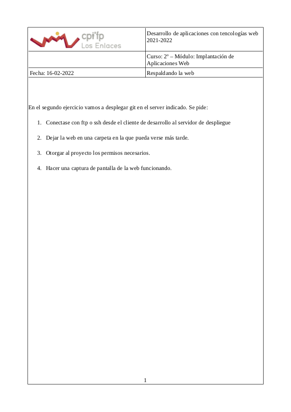

Este es el proyecto web de Irene Sanz Bermúdez
Despliegue de aplicaciones web - 2º DAW Vespertino
Este proyecto trata de resolver, por el momento, dos tareas diferentes relacionadas con el despliegue de aplicaciones web:
Tarea I: Aplicación Web
Tarea II: Hacer llegar el proyecto
Soluciones
Tarea I: Aplicación Web
1. Desarrollar un esquema, bosquejo o Mockup de cómo será la web.
Boceto de la página de inicio:
Boceto de otra página:
2. Que el proyecto contenga un un directorio principal, un directorio para imágenes, un directorio para css y otro para scripts.
3. Que tenga, como mínimo, tres páginas: index.html, página secundaria y una página terciaria.
4. Que busques un css básico y se aplique.
5. Que se pueda navegar en la página.